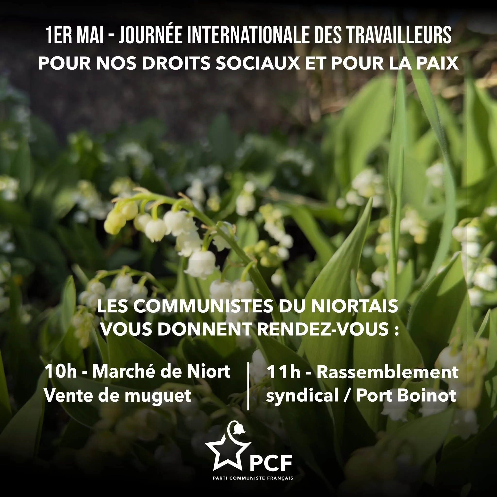

Annonce fédérale
À Niort, notre appel pour un 1er Mai de lutte et de paix
Date de mise à jour indiquée par Facebook · 30 avril 2026
Repères éditoriaux
Nous avions donné rendez-vous vendredi 1er mai à 10 h au marché de Niort pour la vente du muguet, puis à 11 h à Port Boinot pour le rassemblement à l’initiative des organisations syndicales. Ensemble, nous voulions faire entendre nos revendications pour les salaires, les droits sociaux et la paix.
Texte de la publication · PCF Niort
Retrouvez-nous ce Vendredi 1er Mai sur le marché de Niort pour la vente de muguet, puis à Port Boinot pour un rassemblement à l'initiative des organisations syndicales.
Ensemble, soyons mobilisé.e.s pour faire entendre nos revendications pour nos salaires, nos droits sociaux et pour la paix !

Sources
PCF Niort · publication relayée par le PCF 79 · bibliothèque Facebook · AR-0002-FB-00794
À lire aussi · À Niort, nous avons porté nos revendications du 1er Mai